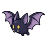
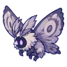
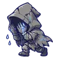
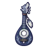
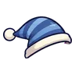

สวนรูปปั้นร้องไห้
ดูบนแผนที่และวิธีไป วางแผนฟาร์ม
ชั้นล่างในป่ากองไฟ · Lv 28–38
ชั้นล่าง / ดันเจี้ยน
มอนในแมพ (8)
| มอน | Lv | ธาตุ | โซน |
|---|---|---|---|
 ค้างคาวรัตติกาล | 28–34 | มืด | |
| 30–38 | วิญญาณ | ||
 ผีเสื้อหลุมศพ | 28–36 | วิญญาณ | น้ำพุร้องไห้ |
| 30–38 | ไฟ | ||
| 36–38 | วิญญาณ | น้ำพุร้องไห้ | |
 รูปปั้นร้องไห้ | 30–38 | ดิน | น้ำพุร้องไห้ |
| รูปปั้นร้องไห้ · ร่างหยกร้าว | 30–38 | ดิน | |
| 40–40 | อมตะ |
อุปกรณ์ที่ดรอปในแมพนี้
| ของ | โอกาสสูงสุด |
|---|---|
| 0.5% | |
| 0.25% | |
| 0.25% | |
| 0.25% | |
| 0.25% | |
| 0.24% | |
| ชุดหนังปีกค้างคาว | 0.15% |
| 0.12% | |
 เครื่องดนตรีหมาป่าเงาจันทร์ | 0.12% |
| 0.12% | |
| 0.12% | |
| 0.12% | |
| 0.12% | |
| รังนกกับลูกนก | 0.08% |
 หมวกนอน | 0.08% |